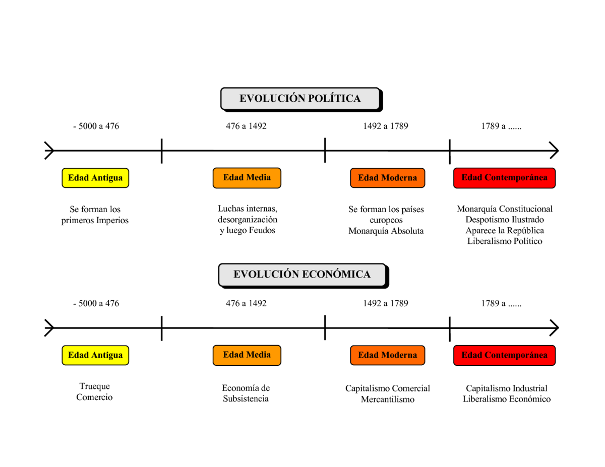

- Lo primero que debes hacer es leer respecto al tema sobre el que harás la línea del tiempo.
- Selecciona los aspectos que necesitas representar y registrar, así como el momento en el que ocurrieron. Recuerda que estos aspectos pueden referirse al inicio o fin de una guerra, al año en que se decreta una ley o se inventó una máquina, al periodo en el que se llevó a cabo una revolución, al momento de auge de una corriente de pensamiento o una manifestación cultural, etc.
- Determina la primera y la última fecha a representar.
- Decide la escala de medición que utilizarás (meses, años, lustros, décadas, siglos, etc.).
- Traza una línea recta horizontal en la que señales las marcas temporales acordes con la escala de medición que utilizarás.
- Escribe sobre la línea palabras e ideas clave que se refieran a los aspectos que seleccionaste; éstos deben estar registrados en estricto orden cronológico.
- Puedes utilizar diferentes colores y tipos de líneas que sirvan como distintivo entre cada periodo o acontecimiento histórico, con el propósito de que se ubiquen más fácil los datos en el tiempo. Recuerda que puedes utilizar ilustraciones que complementen la información presentada.
¿Cómo se hace?
Obra publicada con Licencia Creative Commons Reconocimiento Compartir igual 4.0